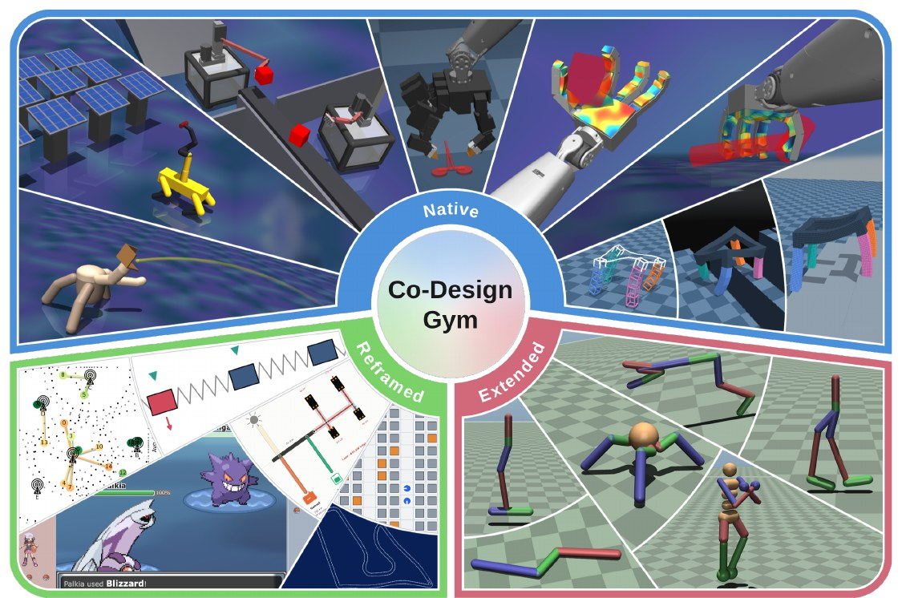
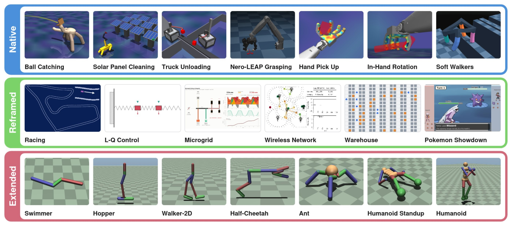
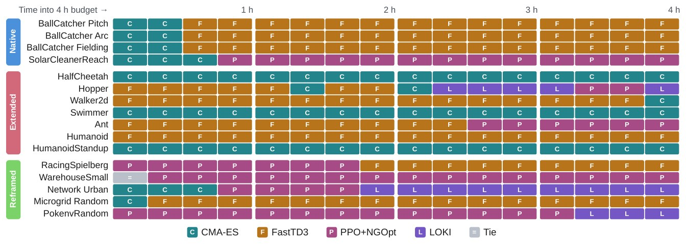

Co-Design
Gym
Benchmarks fix the robot and train the brain. Co-Design Gym lets you optimize both: the body and the policy, together, across 20 domains.
- 1Department of Computer Science & Technology, University of Cambridge
- 2Department of Computer Science, Technical University of Munich
- 3College of Engineering, Carnegie Mellon University
- 4MorphoAI
- *Equal contribution
real rollouts from our baseline runs (the soft walker is an environment render)
The body shapes the brain.
The brain defines the body.
An embodiment decides what a policy can do; the best embodiment is the one whose policy does best. Optimize them apart and you leave performance on the table.

- Fix the body, and policy learning searches one slice of the landscape.
- Change the body, and the best policy changes with it.
- Co-design searches the whole landscape: a doubly non-stationary problem.
Try it yourself
Two tiny co-design problems, running live in your browser.
A 2D toy of our Ball Catcher: a longer arm reaches further but swings slower, so the right aim depends on the body you built.
Real 2D physics (planck.js). Every gait is evolved by a small genetic algorithm in your browser. Long legs walk about twice as far as the base body, but only with a gait of their own.
20 families. 86 presets.
Hover a card to watch it; tap for presets and code.

No single winner.
Lots of headroom.
Four representative co-design methods (CMA-ES, FastTD3, PPO+NGOpt, LOKI), a matched 4-hour budget and 5 seeds each. None of them solves co-design. There is a lot of room for innovation.
No single winner
12 of 16presets where the leading method changes during training.
Who finishes ahead, out of 16 presets. Every method wins somewhere; none wins everywhere.
- 9 → 4 CMA-ES leads early on 9 presets, but finishes ahead on only 4.
- 0 methods lead on every domain group.
Lots of headroom
42%is the most any method reaches of the maximum return on our native & warehouse tasks.
Best method's final return as a share of the maximum, per preset. The dashed line is a solved task.

your method here?
Beat the scoreboard.
Every preset, every baseline, one make_vec call away.
Dig into any preset
–
Lines: seed-mean eval return, step-held between evaluations; bands: ±1 std over seeds. An evaluation where every design was rejected is a gap.
Gymnasium, plus a design axis
Any Gymnasium environment becomes a co-design environment by declaring an embodiment_space.
import codesign_gym as cg # one entry point; returns the env and its base design env, theta0 = cg.make_vec("BallCatcher-Pitch", num_envs=8) # your outer loop proposes a design ... theta = optimizer.ask(env.embodiment_space, theta0) obs, rejected, info = env.reset(embodiment=theta) # ... and your inner loop acts in it for t in range(horizon): obs, reward, term, trunc, info = env.step(policy(obs))
# reset returns a per-env rejection flag instead of raising obs, rejected, info = env.reset(embodiment=thetas) if rejected.any(): # structurally impossible designs: out of bounds, # wrong shape, overlapping cells. Score them and re-propose; # stepping a rejected env is an error. optimizer.tell(thetas[rejected], penalty) # check a design without touching the simulator state ok = env.validate_embodiment(theta)
# Racing and the Shape-shifting Hand accept a design at every step env, theta = cg.make_vec("RotateInHand", num_envs=64) obs, _, _ = env.reset(embodiment=theta) for t in range(horizon): theta = theta + 0.01 * design_policy(obs) # reshape the pads obs, r, term, trunc, info = env.step(action, embodiment=theta) # an eval env ignores step-time designs (with a warning), # so a fixed design cannot be reshaped mid-episode eval_env, _ = cg.make_vec("RotateInHand", 8, is_eval_env=True)
# envs/my_env/registration.py def build_vec(num_envs, *, is_eval_env, max_action_space_size, max_observation_space_size, **cfg): env = MyNativeVectorEnv(num_envs, **cfg) # vmap, shards, warp... env.base_embodiment = default_design() return env # codesign_gym/registry.py: one row, imported only when used REGISTRY["MyEnv-v0"] = ("envs.my_env.registration:build_vec", {})
- One call.
make_vecreturns a GPU-parallel env and its base embodiment. - Design in
reset. Passembodiment=Noneand it is plain Gymnasium. - Honest evaluation.
is_eval_env=Truelocks the design for the whole episode.
Cite
If Co-Design Gym helps your work, please cite the paper.
@misc{newatia2026codesigngym,
title = {Co-Design Gym: A Unified Benchmark for Embodiment-Policy Co-Optimization},
author = {Newatia, Aviraj and Tsvetkov, Yordan and Pleiss, Leonard and Spielberg, Andrew and Antonova, Rika},
year = {2026},
note = {Preprint},
url = {https://github.com/camral/codesign-gym}
}